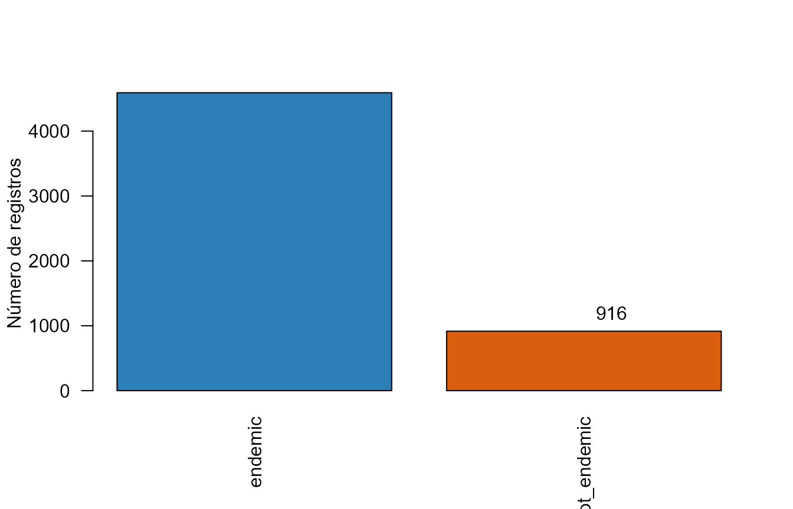

Evaluación actual del endemismo de las plantas del Perú
redbookperu
2026-09-26
Source:vignettes/evaluacion-endemismo.Rmd
evaluacion-endemismo.RmdResumen
La introducción de León, Pitman y Roque (2006) presentó el endemismo nacional como una hipótesis de trabajo para priorizar la conservación de la flora peruana. El artículo reportó 5.509 taxones restringidos al Perú y señaló que su estatus debía revisarse mediante nuevas colecciones, exploración y estudios taxonómicos.
Esta viñeta actualiza esa hipótesis para los 5.507 registros
distribuidos con redbookperu. Primero reconcilia los
nombres históricos con el backbone WCVP mediante
wcvpmatch::wcvp_matching(). Después consulta la
distribución de los nombres aceptados mediante
wcvpmatch::wcvp_distribution(), usando la información de
distribución asociada a POWO/WCVP.
Se distinguen tres estados: endémico confirmado
cuando WCVP reporta una distribución nativa igual a Peru;
no endémico según WCVP cuando se reporta al menos un
área nativa fuera del Perú; y no resuelto cuando no
existe una distribución utilizable. Estos estados no sustituyen una
revisión de herbarios, una evaluación de amenaza ni una verificación de
campo.
Antecedentes
El trabajo original combinó revisión nomenclatural, literatura
taxonómica, herbarios, localidades y conocimiento experto. También
distinguió dos causas de cambio del estatus endémico: cambios
taxonómicos o nomenclaturales, y ampliaciones del rango geográfico. La
actualización mantiene ambas dimensiones separadas:
redbook_name conserva el nombre histórico y
accepted_name representa la interpretación taxonómica
actual.
Materiales y métodos
Catálogo histórico
redbook <- as.data.frame(redbookperu::redbook_tab,
stringsAsFactors = FALSE)
data.frame(
registros = nrow(redbook),
ids_unicos = length(unique(redbook$redbook_id)),
nombres_historicos_unicos = length(unique(redbook$redbook_name))
)
#> registros ids_unicos nombres_historicos_unicos
#> 1 5507 5507 5507La versión actual contiene 5.507 registros, frente a los 5.509
taxones reportados en la publicación original. La comparación conserva
el redbook_id como identificador del registro
histórico.
Actualización taxonómica
La actualización se genera con el script data-raw/update_taxonomy.R,
que ejecuta:
classified <- wcvpmatch::classify_spnames(redbook$redbook_name)
taxonomy <- wcvpmatch::wcvp_matching(classified,
allow_duplicates = TRUE)Los resultados se almacenan en el catálogo Parquet incluido en el
paquete y se reflejan en accepted_name,
accepted_family, accepted_name_author,
accepted_plant_name_id, wcvp_taxon_status y
wcvp_matched.
taxonomy_summary <- data.frame(
indicador = c("Registros", "Coincidencias WCVP",
"Nombres aceptados diferentes del histórico",
"Familias aceptadas disponibles"),
n = c(
nrow(redbook),
sum(redbook$wcvp_matched %in% TRUE, na.rm = TRUE),
sum(!is.na(redbook$accepted_name) &
tolower(redbook$redbook_name) != tolower(redbook$accepted_name)),
sum(!is.na(redbook$accepted_family))
)
)
knitr::kable(taxonomy_summary, col.names = c("Indicador", "N"))| Indicador | N |
|---|---|
| Registros | 5507 |
| Coincidencias WCVP | 0 |
| Nombres aceptados diferentes del histórico | 1014 |
| Familias aceptadas disponibles | 5507 |
Distribución nativa
Se consulta el nombre aceptado cuando existe y, de lo contrario, el nombre histórico. Se conservan las filas duplicadas para mantener una observación por registro del Libro Rojo.
query_name <- redbook$accepted_name
fallback <- is.na(query_name) | !nzchar(trimws(query_name))
query_name[fallback] <- redbook$redbook_name[fallback]
distribution <- as.data.frame(
wcvpmatch::wcvp_distribution(query_name, output = "summary"),
stringsAsFactors = FALSE
)
#> 29 inputs did not contain a complete species binomial; matching will continue
#> and may fall back to genus-level distribution.
#> Warning: Hybrid marker removed from
#> • x Haagespostoa mirabilis, Epiphyllum x floribundum, x Haagespostoa
#> albisetata, x Haagespostoa climaxantha, Lantana x armata, x Lycida
#> mathiasiae, x Borzicana mirabilis, Phragmipedium x richteri, and Solanum x
#> blanco-galdosii
#> Warning: ! 29 genus-only rows detected (Rank==1 / sp./spp.).
#> ℹ These will not participate in species-level strict matching.
#> Warning: ! Multiple fuzzy matches for some genera (tied distances).
#> ℹ A uniquely species-supported candidate is selected; otherwise the
#> alphabetically first genus is selected.
#> 34 inputs without species-level distribution were resolved with genus-level
#> distribution.
stopifnot(nrow(distribution) == nrow(redbook))
has_distribution <- distribution$matched &
!is.na(distribution$distribution)
peru_only <- has_distribution & !is.na(distribution$native) &
distribution$native & trimws(distribution$distribution) == "Peru"
current_status <- rep("unresolved", nrow(distribution))
current_status[peru_only] <- "endemic"
current_status[has_distribution & !peru_only] <- "not_endemic"
distribution$current_status <- current_status
distribution$redbook_id <- redbook$redbook_id
distribution$redbook_name <- redbook$redbook_name
distribution$accepted_name_redbook <- redbook$accepted_nameResultados
Estado actual
status_table <- as.data.frame(table(distribution$current_status),
stringsAsFactors = FALSE)
names(status_table) <- c("estado", "n")
status_table$porcentaje <- round(100 * status_table$n / nrow(redbook), 1)
knitr::kable(status_table,
col.names = c("Estado WCVP/POWO", "N", "%"),
caption = "Clasificación actual de los registros históricos.")| Estado WCVP/POWO | N | % |
|---|---|---|
| endemic | 4591 | 83.4 |
| not_endemic | 916 | 16.6 |
barplot(status_table$n, names.arg = status_table$estado,
col = c("#2c7fb8", "#d95f0e", "#969696"),
ylab = "Número de registros", las = 2)
text(seq_along(status_table$n), status_table$n,
labels = status_table$n, pos = 3)
Estado de distribución de los registros del Libro Rojo.
La cifra principal se calcula directamente desde la tabla de resultados:
data.frame(
registros = nrow(redbook),
endemicos_confirmados = sum(distribution$current_status == "endemic"),
porcentaje_confirmado = round(100 *
mean(distribution$current_status == "endemic"), 1),
no_endemicos = sum(distribution$current_status == "not_endemic"),
no_resueltos = sum(distribution$current_status == "unresolved")
)
#> registros endemicos_confirmados porcentaje_confirmado no_endemicos
#> 1 5507 4591 83.4 916
#> no_resueltos
#> 1 0Ejemplo de sinonimia y distribución
examples <- c("Sanchezia capitata", "Sanchezia ovata",
"Styrax nunezii", "Styrax omuk", "Styrax vilcabambae")
example_distribution <- as.data.frame(
wcvpmatch::wcvp_distribution(examples, output = "summary"),
stringsAsFactors = FALSE
)
knitr::kable(example_distribution[, c("submited_name",
"accepted_taxon_name",
"distribution",
"distribution_status")],
col.names = c("Nombre consultado", "Nombre aceptado WCVP",
"Distribución", "Estado"))| Nombre consultado | Nombre aceptado WCVP | Distribución | Estado |
|---|---|---|---|
| Sanchezia capitata | Sanchezia ovata | Bolivia - Brazil North - Peru | distribution_found |
| Sanchezia ovata | Sanchezia ovata | Bolivia - Brazil North - Peru | distribution_found |
| Styrax nunezii | Styrax nunezii | Bolivia - Peru | distribution_found |
| Styrax omuk | Styrax omuk | Peru | distribution_found |
| Styrax vilcabambae | Styrax vilcabambae | Peru | distribution_found |
Sanchezia ovata demuestra por qué la actualización
nomenclatural debe preceder a la evaluación geográfica: puede
consultarse el nombre actual, recuperar el registro histórico de
Sanchezia capitata y conservar su identidad de endemismo
mediante el redbook_id.
Discusión
Una distribución WCVP que incluye países fuera del Perú indica que el taxón ya no cumple la definición estricta de endemismo nacional utilizada aquí. No demuestra por sí sola que la evaluación histórica haya sido incorrecta: puede reflejar una ampliación del conocimiento, una sinonimia, una identificación revisada o una diferencia en la cobertura geográfica de las bases de datos.
La resolución por sinonimia evita declarar una pérdida de endemismo
solo por un cambio de nombre. En redbookperu, una consulta
por nombre actualizado puede devolver
matched_via = "accepted_name" y
name_update_status = "updated_name", manteniendo la
conexión con el taxón histórico. La pérdida de endemicidad se reserva
para los casos en que la distribución nativa WCVP incluye áreas fuera
del Perú.
Limitaciones y próximos pasos
La distribución de WCVP es una síntesis taxonómica, no un inventario completo de ocurrencias ni una evaluación de amenaza. Ocho registros se resolvieron mediante distribución de género; deben revisarse antes de emplearse en decisiones de conservación. El siguiente paso es generar informes de cambios entre snapshots, registrar explícitamente la versión de WCVPdata y revisar manualmente los registros clasificados como no endémicos.
Referencias
León, B., Pitman, N. y Roque, J. (2006). Introducción a las plantas endémicas del Perú. En: El libro rojo de las plantas endémicas del Perú. Revista Peruana de Biología, 13(2), 9s-22s. DOI: 10.15381/rpb.v13i2.1782.
Plants of the World Online. Royal Botanic Gardens, Kew. World Checklist of Vascular Plants (WCVP).
Santos Andrade, P. E. wcvpmatch.